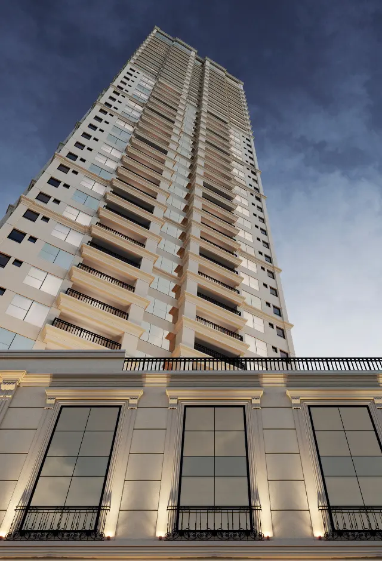
Maison Ladurée
- Suites
- 4 suites
- Superficie
- 173m² a 340m² de superficie privada
- Cocheras
- 3 a 4 vacantes
- Pisos
- 40
Inspirada en la armonía del arte francés, la torre Maison Ladurée es un hito arquitectónico que combina estilos clásicos y contemporáneos. Con su imponente silueta y detalles atemporales, cada línea y acabado refleja la sofisticación que define el Estándar Dallo. Diseñada para integrar belleza estética y funcionalidad, la torre invita a vivir en una ubicación icónica de Itapema.
Majestuosa a menos de 200 metros de la playa, Maison Ladurée es una torre de 40 plantas que alberga 44 apartamentos estándar y 10 áticos, todos con 4 suites y al menos 3 plazas de aparcamiento. Con vistas panorámicas que abarcan el mar, el río y toda la costa, hasta las colinas que enmarcan la ciudad, cada residencia ofrece un entorno impresionante y exclusivo. Maison Ladurée ofrece una zona de ocio distribuida en tres plantas, incluyendo un espacio exclusivo en la sexta planta y dos plantas en la azotea. En total, más de 1120 m² están dedicados al bienestar y la convivencia de sus residentes.
- Altura
- 144 metros de altura
- Entrega
- 2029
La torre
Inspirada en la armonía del arte francés, la torre Maison Ladurée es un hito arquitectónico que combina estilos clásicos y contemporáneos, elevándose majestuosamente a menos de 200 metros de la playa con 40 pisos que comprenden 44 apartamentos estándar y 10 penthouses, todos con 4 suites y al menos 3 espacios de estacionamiento.
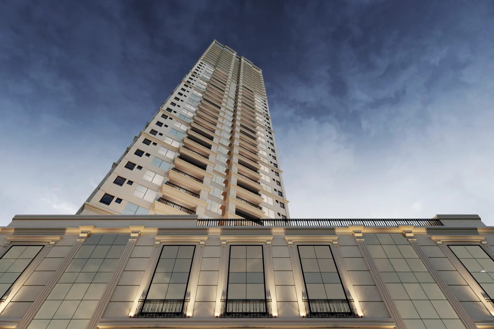
Azotea
La torre cuenta con dos pisos exclusivos en la azotea dedicados al bienestar y la interacción social de los residentes.

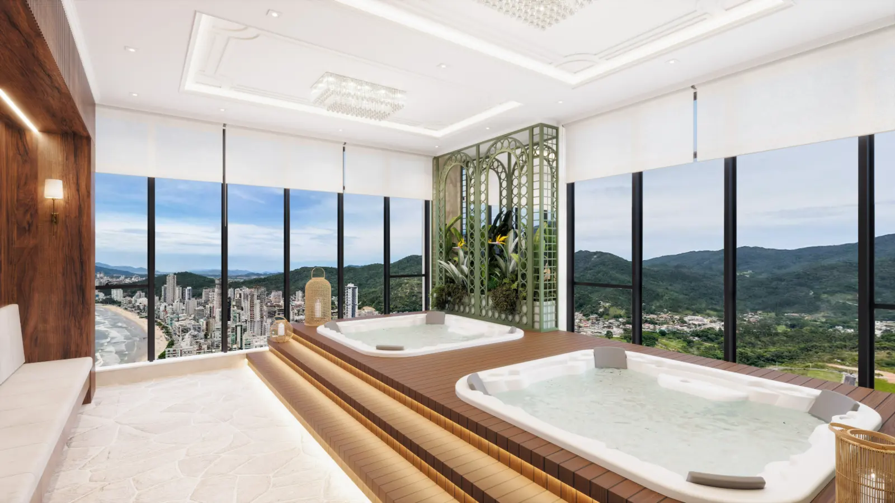
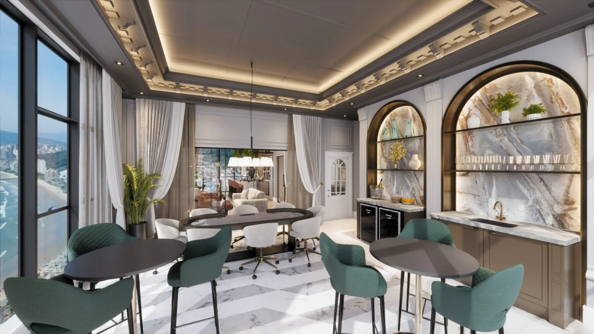

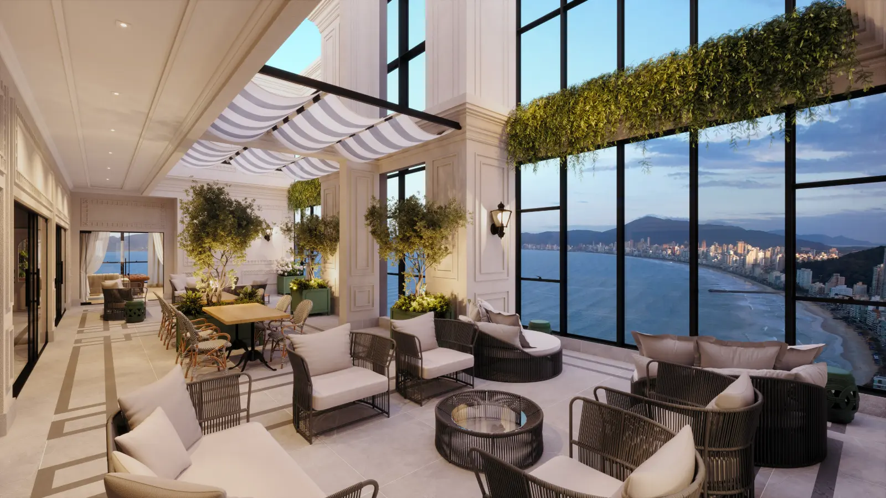
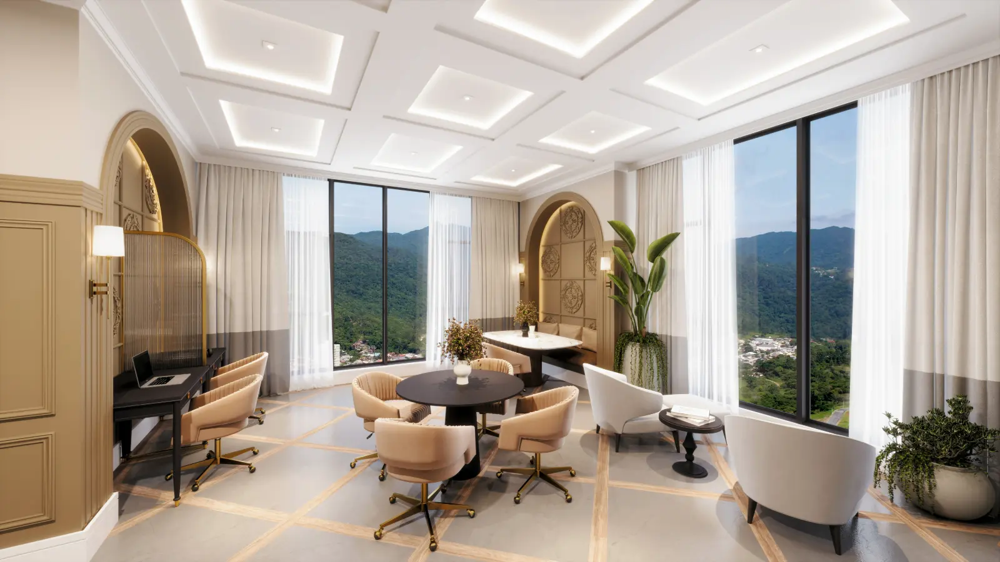

Ocio
Maison Ladurée ofrece un espacio de ocio completo distribuido en tres plantas, incluyendo un espacio exclusivo en la sexta planta y dos plantas en la azotea (39.ª y 40.ª). En total, más de 1120 m² están dedicados al bienestar y la convivencia de los residentes.

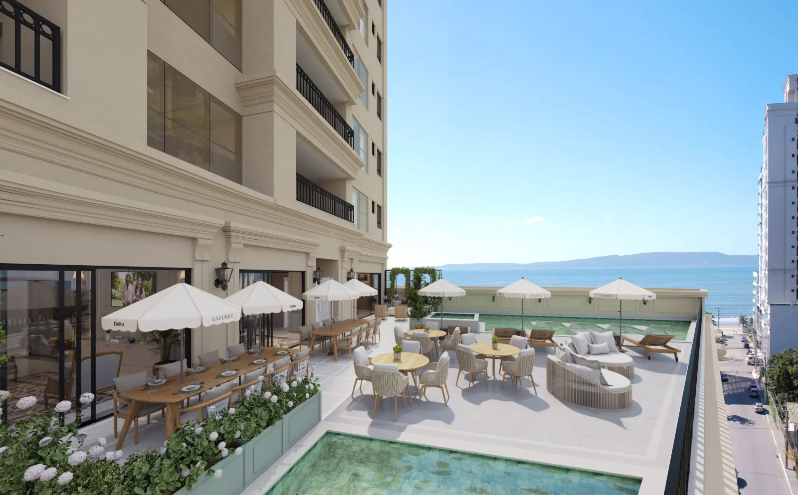


Tipos de apartamentos
Del piso 7 al 28, los apartamentos estándar de Maison Ladurée ofrecen 173 m² de espacio privado y 300 m² de superficie total. Cuentan con 4 suites y 3 plazas de aparcamiento.

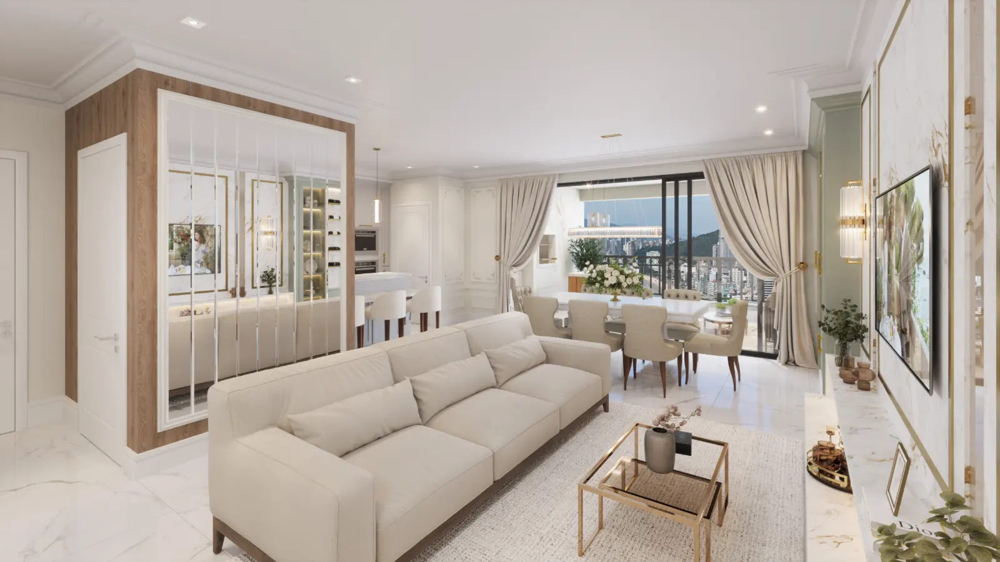
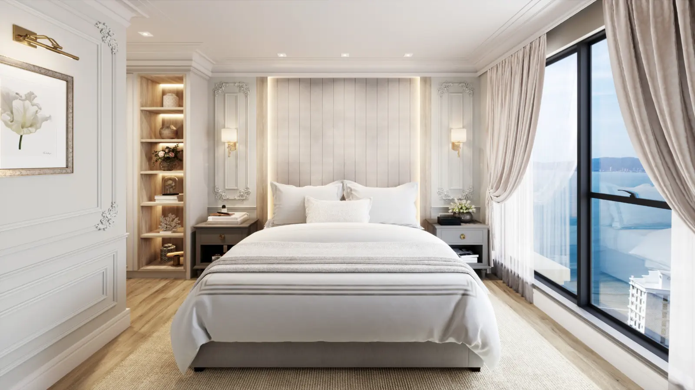
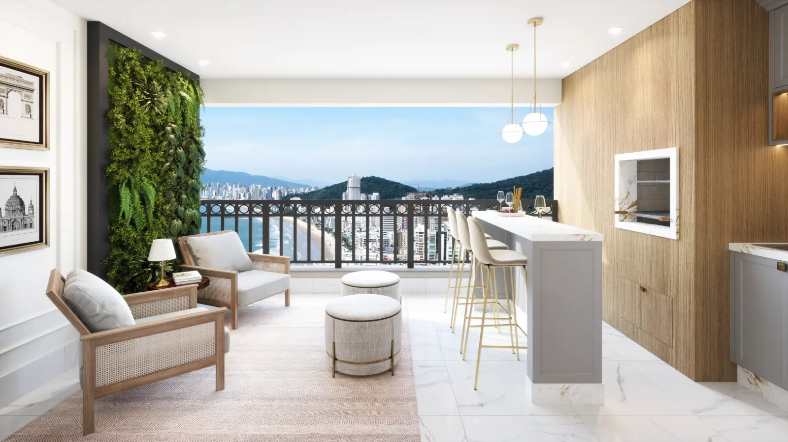
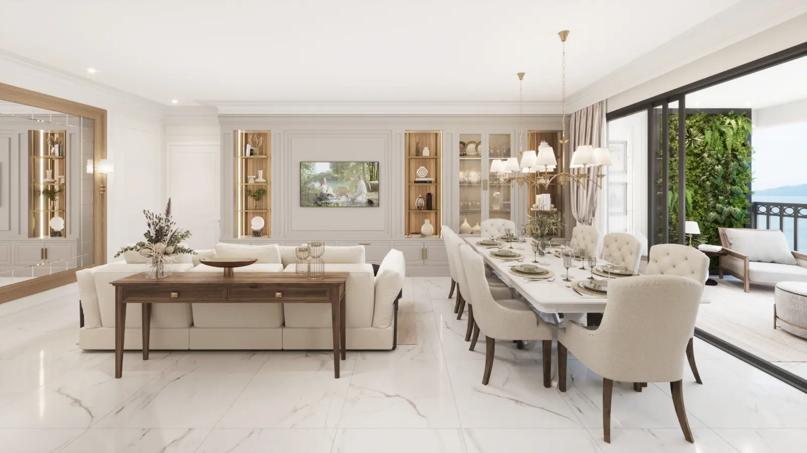
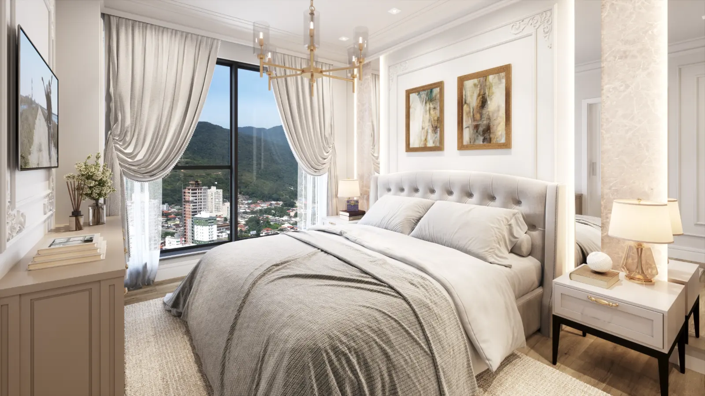
Ático
Ubicados entre las plantas 29 y 38, los áticos de Maison Ladurée impresionan con 302 m² de espacio privado y hasta 494 m² de superficie total. Cuentan con 4 amplias suites y entre 3 y 4 plazas de aparcamiento.

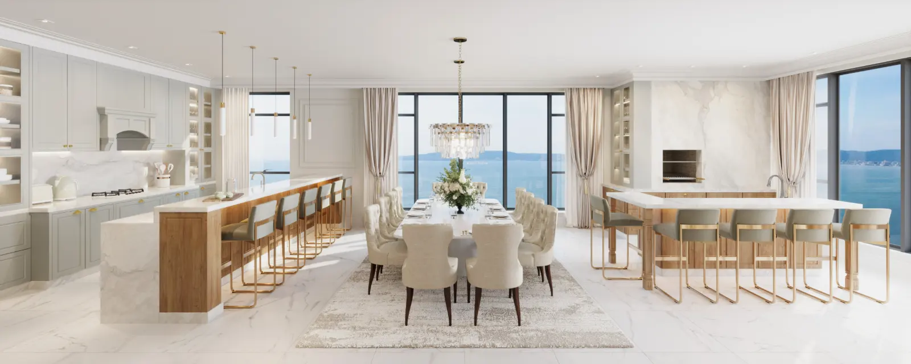


Plantas

1 - Salón de fiestas · 2 - Sala de juegos infantiles · 3 - Zona Gourmet · 4 - Sala de juegos · 5 - Salón exterior · 6 - Piscina para adultos con zona de poca profundidad y Spa · 7 - Piscina infantil

1 - Espacio de trabajo · 2 - Terraza · 3 - Salón · 4 - Sala de póquer · 5 - Club social
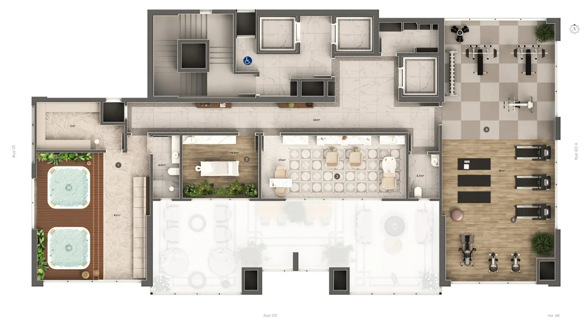
1 - Spa y Sauna · 2 - Sala de Masajes · 3 - Cuidado Personal · 4 - Gimnasio
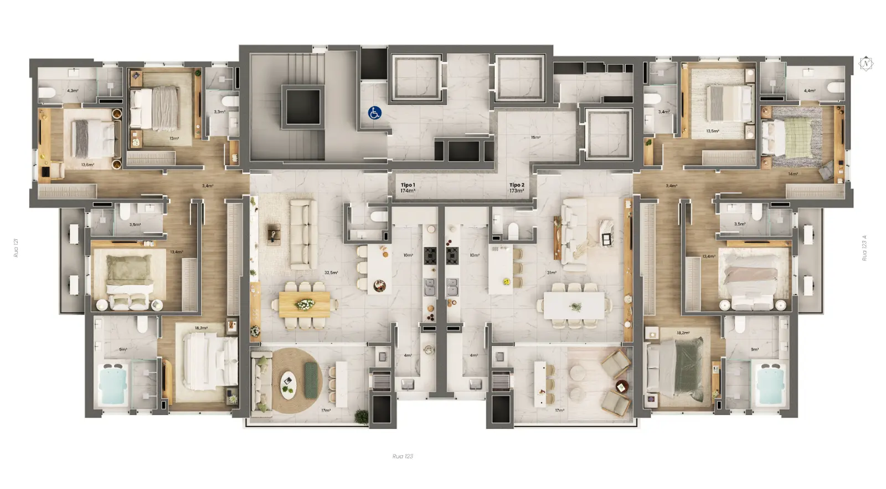
Pisos 7.º a 28.º · 4 suites • 3 plazas de aparcamiento · Tipo 1: 174 m² de superficie privada y 300 m² de superficie total · Tipo 2: 173 m² de superficie privada y 300 m² de superficie total
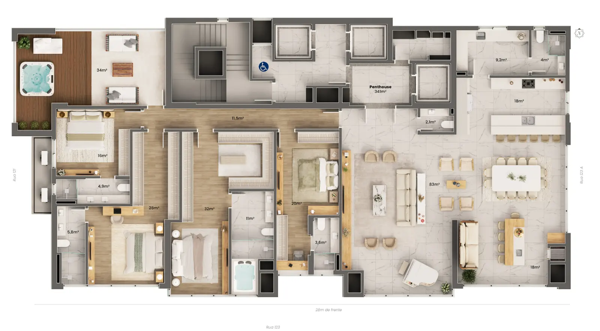
Piso 29 · 4 suites • 3 a 4 plazas de aparcamiento · 340,6 m² de superficie privada, Terraza privada con spa (34 m²)

Pisos 30 al 38 · 4 suites • 3 a 4 plazas de aparcamiento · 302 m² de área privada y 494 m² de área total
Trabajar
Inicio de la construcción: septiembre de 2024 • Entrega: diciembre de 2029
Registro de Constitución de Sociedades Inmobiliarias: R-6/M-83.444.